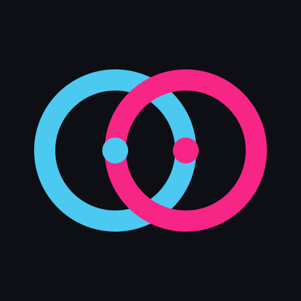

This is a one-time step that YouTube requires for search. The key is stored only on this device. Pasting a link works without it.
Preview the next track in headphones while the speaker keeps playing. Works with your own music files, on Chrome or Edge on a computer.
Shortcuts: Q play 1 · P play 2 · ←→ mix · F fade